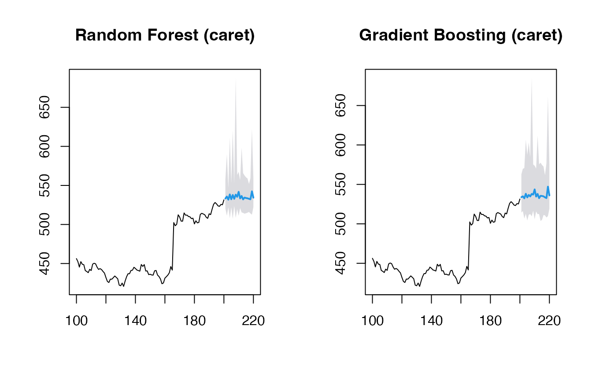
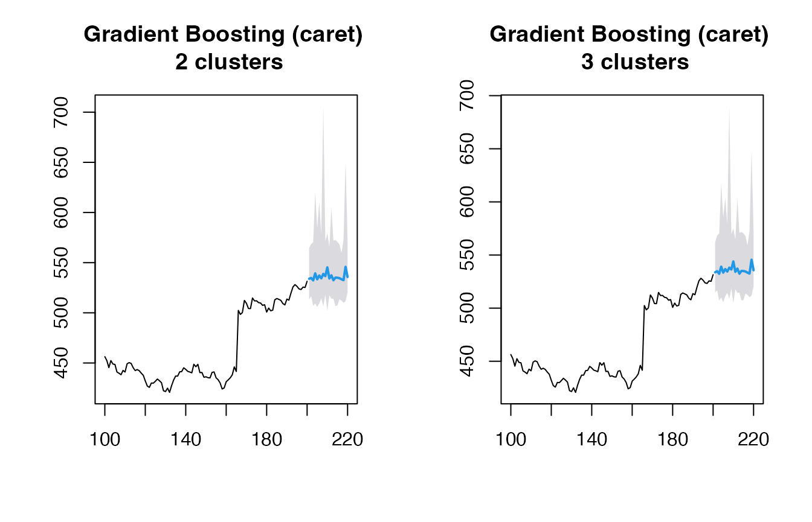
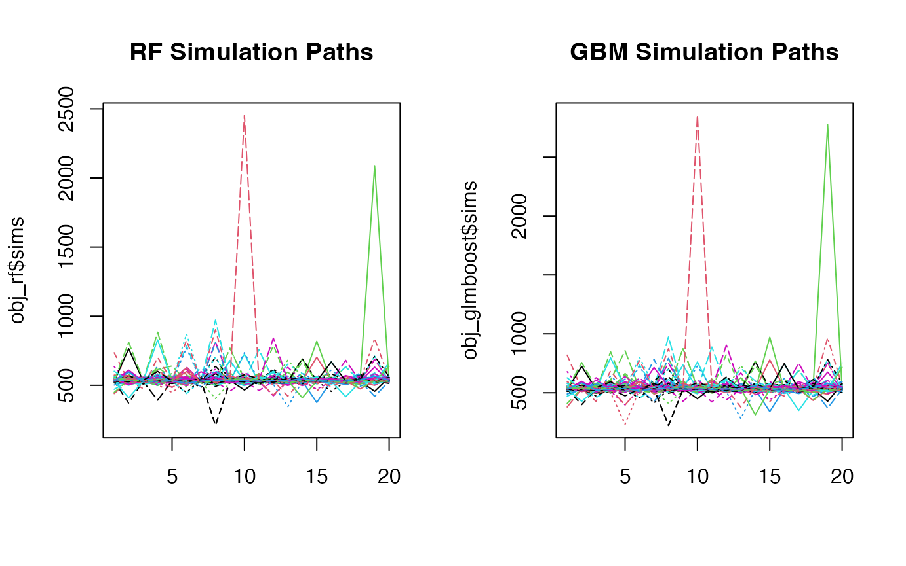
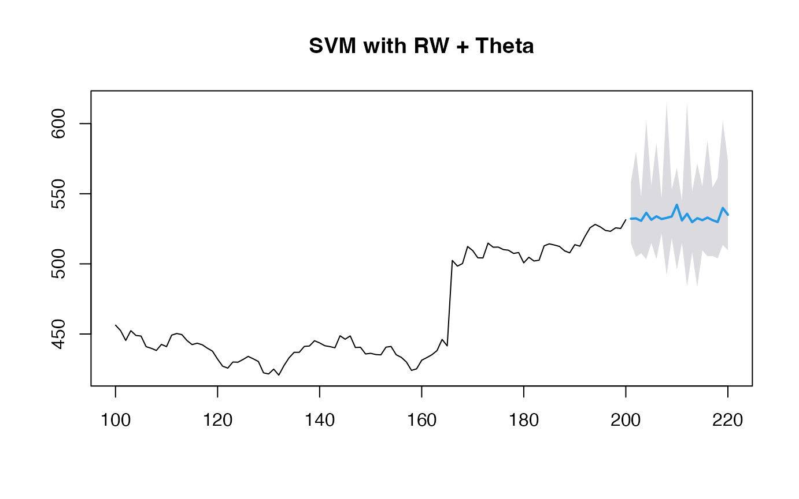

mlarch.RmdProbabilistic stock forecasting often relies on parametric models
like ARIMA for the mean and GARCH for volatility. The
mlarchf function in the ahead package offers a
flexible hybrid alternative to ARMA-GARCH by combining machine learning
approaches with ARCH effects.
The model decomposes the time series into two components:
where:
The key innovation is using machine learning methods
and conformal prediction to model the volatility component, allowing for
more flexible and potentially more accurate volatility forecasts than
traditional GARCH models. The function supports various machine learning
methods through parameters fit_func and
predict_func as in other ahead models, and
through the caret package.
The forecasting process involves:
auto.arima)(basically a supervised regression of squared residuals on their lags) is a good approximation of the latent conditional volatility
This new approach combines the interpretability of traditional time series models with the flexibility of machine learning, while maintaining proper uncertainty quantification through conformal prediction.
Let’s start with a simple example using the Google stock price data
from the fpp2 package:
y <- fpp2::goog200
# Default model for volatility (Ridge regression for volatility)
(obj_ridge <- ahead::mlarchf(y, h=20L, B=500L))## Point Forecast Lo 95 Hi 95
## 201 532.2466 517.5336 549.7757
## 202 531.7224 508.7407 551.2736
## 203 533.2419 519.0814 549.6870
## 204 538.2219 519.6206 558.4492
## 205 533.6841 515.4831 550.8374
## 206 536.0713 522.1237 551.1261
## 207 537.9695 520.3529 550.8776
## 208 536.6699 519.0572 552.6137
## 209 540.0722 520.8839 557.9275
## 210 540.1827 527.2999 564.3716
## 211 541.1687 524.6547 553.8595
## 212 540.4668 524.1063 562.6405
## 213 540.3615 522.8568 564.6440
## 214 541.6808 524.9868 556.9405
## 215 541.9843 526.4016 563.4524
## 216 542.8743 527.5210 562.6984
## 217 543.3400 528.7223 560.6608
## 218 543.5208 522.6618 565.3814
## 219 544.4165 528.6999 560.2330
## 220 544.7700 526.8605 563.6332The package supports various machine learning methods for volatility modeling. Here are some examples:
# Random Forest
(obj_rf <- ahead::mlarchf(y, fit_func = randomForest::randomForest,
predict_func = predict, h=20L, B=500L))## Point Forecast Lo 95 Hi 95
## 201 531.9517 515.6404 552.4905
## 202 531.0605 499.2462 557.9429
## 203 533.0027 516.7323 549.3157
## 204 538.3712 509.4953 570.6494
## 205 533.3921 512.2171 551.7586
## 206 536.1623 516.8040 557.6500
## 207 537.0717 518.5476 550.9563
## 208 535.9312 510.7029 556.2981
## 209 539.4628 518.0278 557.7942
## 210 540.0882 523.9127 565.8656
## 211 540.4643 519.4844 555.5747
## 212 539.9939 517.8169 568.8531
## 213 540.0599 520.7249 564.5208
## 214 541.3976 518.2174 562.2963
## 215 541.8548 525.8548 561.7012
## 216 542.3758 519.2101 570.8345
## 217 543.1514 530.1273 561.1180
## 218 543.2217 515.2835 570.5249
## 219 544.2241 528.7958 561.2026
## 220 543.6975 518.8463 565.4918
# Support Vector Machine
(obj_svm <- ahead::mlarchf(y, fit_func = e1071::svm,
predict_func = predict, h=20L, B=500L))## Point Forecast Lo 95 Hi 95
## 201 532.1455 521.5879 546.6228
## 202 532.2275 520.2053 543.1745
## 203 533.1297 518.5114 550.7870
## 204 537.8907 518.8644 559.3977
## 205 533.6029 515.9998 551.5854
## 206 536.0895 523.8712 550.9430
## 207 537.3987 523.3773 547.4093
## 208 536.2988 508.2222 559.3918
## 209 539.4160 524.6358 553.9430
## 210 539.4622 531.3708 553.7650
## 211 540.9101 524.5584 552.6942
## 212 540.2716 525.1236 559.0416
## 213 540.2893 526.4296 559.3038
## 214 541.4417 529.9064 551.8318
## 215 541.8952 529.1555 559.2567
## 216 542.6702 523.7427 567.2290
## 217 543.2556 532.1947 556.4755
## 218 543.6565 527.9525 558.3444
## 219 544.2942 527.3220 561.5194
## 220 544.5991 526.5257 562.9114
# Elastic Net
(obj_glmnet <- ahead::mlarchf(y, fit_func = glmnet::cv.glmnet,
predict_func = predict, h=20L, B=500L))## Point Forecast Lo 95 Hi 95
## 201 532.3071 515.7973 552.1411
## 202 531.7216 508.2767 551.7320
## 203 533.2533 518.2002 551.1174
## 204 537.6639 522.1668 554.5648
## 205 533.6548 514.0396 551.8262
## 206 536.1104 520.9228 551.0152
## 207 538.0337 521.1769 550.8287
## 208 536.7910 521.2423 551.4666
## 209 540.0483 521.6461 556.5542
## 210 540.3077 526.3785 566.3170
## 211 541.1819 524.9465 554.0462
## 212 540.5287 525.6995 562.5394
## 213 540.4023 522.5089 564.7103
## 214 541.7220 524.7038 556.4230
## 215 542.0254 526.4180 563.1878
## 216 542.9348 527.5376 564.1511
## 217 543.3566 528.6570 561.2644
## 218 543.5358 522.3445 565.5689
## 219 544.4455 528.6495 560.2803
## 220 544.8579 526.3796 563.5331Let’s visualize the forecasts:
The package also supports models from the caret package,
which provides access to hundreds of machine learning methods. Here’s
how to use them:
y <- window(fpp2::goog200, start=100)
# Random Forest via caret
(obj_rf <- ahead::mlarchf(y, ml_method="ranger", h=20L))## Point Forecast Lo 95 Hi 95
## 201 533.2355 520.5517 557.5504
## 202 535.7632 511.3010 589.9901
## 203 531.7730 522.1688 546.4881
## 204 538.4614 508.1257 611.2090
## 205 532.2810 522.1055 552.6025
## 206 537.7786 507.3451 620.4888
## 207 532.8184 523.8467 552.0366
## 208 538.1808 508.4311 687.9486
## 209 535.3898 519.7188 563.4355
## 210 541.8380 511.1680 567.3750
## 211 533.3725 521.0630 556.5736
## 212 536.4758 515.4254 598.5367
## 213 532.0984 514.8375 565.7448
## 214 534.4272 513.8344 562.7467
## 215 533.8462 514.3982 560.3378
## 216 533.4931 515.1172 558.9276
## 217 532.8667 516.0254 551.8489
## 218 532.2443 514.1004 559.2589
## 219 542.4924 512.5793 622.4553
## 220 534.3160 522.4435 558.4786
# Gradient Boosting via caret
(obj_glmboost <- ahead::mlarchf(y, ml_method="glmboost", h=20L))## Point Forecast Lo 95 Hi 95
## 201 533.8250 514.3695 562.7947
## 202 534.8561 516.2209 569.7766
## 203 532.3501 506.7302 570.7212
## 204 538.1338 512.7975 606.4932
## 205 533.5098 504.3820 587.2277
## 206 536.6877 511.4958 603.1120
## 207 534.7478 512.3811 584.2720
## 208 537.9369 509.5884 685.2747
## 209 537.0715 516.6126 575.2654
## 210 543.6795 505.7870 573.6786
## 211 534.5701 515.7037 569.9927
## 212 537.9488 512.3105 611.7902
## 213 532.5499 512.5630 575.4470
## 214 535.5395 503.6327 577.5256
## 215 535.3100 505.1585 574.5305
## 216 534.8833 511.1944 572.7326
## 217 533.6111 510.7481 561.6806
## 218 532.6607 508.0691 576.8602
## 219 547.1413 509.8045 661.3443
## 220 536.0631 519.3618 574.8265
# Gradient Boosting via caret and using clustering explicitly
(obj_glmboost2 <- ahead::mlarchf(y, ml_method="glmboost", n_clusters=2, h=20L))## Point Forecast Lo 95 Hi 95
## 201 533.9668 513.3356 564.6870
## 202 534.7534 516.6850 568.6116
## 203 532.3438 506.9086 570.4382
## 204 539.3444 509.3996 620.1376
## 205 533.3961 505.8990 584.1066
## 206 537.2196 509.4559 610.4248
## 207 534.3876 514.4850 578.4559
## 208 538.7945 506.6821 705.6945
## 209 536.5574 517.9790 571.2407
## 210 545.3112 502.3513 579.3221
## 211 534.2149 517.5159 565.5680
## 212 537.3701 514.0248 604.6076
## 213 532.4652 514.0577 571.9725
## 214 535.1048 506.6137 572.5959
## 215 534.9734 507.4704 570.7488
## 216 534.4927 513.5213 568.0002
## 217 533.4650 512.1682 559.6117
## 218 532.5614 510.0360 573.0471
## 219 545.8281 511.6217 650.4561
## 220 535.7293 520.2439 571.6705
(obj_glmboost3 <- ahead::mlarchf(y, ml_method="glmboost", n_clusters=3, h=20L))## Point Forecast Lo 95 Hi 95
## 201 533.7528 514.8952 561.8324
## 202 534.7420 516.7362 568.4831
## 203 532.3393 507.0368 570.2350
## 204 539.0950 510.0997 617.3265
## 205 533.4271 505.4855 584.9573
## 206 536.7837 511.1276 604.4322
## 207 534.4094 514.3574 578.8084
## 208 538.1287 508.9385 689.8411
## 209 536.3609 518.5012 569.7026
## 210 543.9910 505.1311 574.7559
## 211 534.1351 517.9232 564.5736
## 212 537.2551 514.3654 603.1804
## 213 532.4348 514.5937 570.7266
## 214 535.0272 507.1456 571.7164
## 215 534.9434 507.6766 570.4115
## 216 534.4641 513.6915 567.6540
## 217 533.4284 512.5238 559.0936
## 218 532.5478 510.3036 572.5282
## 219 545.5840 511.9595 648.4317
## 220 535.6843 520.3629 571.2447Visualizing the forecasts:
par(mfrow=c(1, 2))
plot(obj_rf, main="Random Forest (caret)")
plot(obj_glmboost, main="Gradient Boosting (caret)")
par(mfrow=c(1, 2))
plot(obj_glmboost2, main="Gradient Boosting (caret) \n 2 clusters")
plot(obj_glmboost3, main="Gradient Boosting (caret) \n 3 clusters")
Looking at the simulation paths:
par(mfrow=c(1, 2))
matplot(obj_rf$sims, type='l', main="RF Simulation Paths")
matplot(obj_glmboost$sims, type='l', main="GBM Simulation Paths")
You can also customize both the mean forecasting model and the model for forecasting standardized residuals:
# Using RW + Theta method for mean and residuals along with SVM for volatility
(obj_svm <- ahead::mlarchf(y, fit_func = e1071::svm,
predict_func = predict, h=20L,
mean_model=forecast::rwf,
model_residuals=forecast::thetaf))## Point Forecast Lo 95 Hi 95
## 201 532.1780 514.6744 558.2968
## 202 532.4080 504.9185 580.0936
## 203 530.6700 507.5382 547.7996
## 204 536.4531 503.3450 602.4162
## 205 531.4186 514.8389 555.7484
## 206 533.9142 503.3753 586.3795
## 207 531.9551 521.6181 546.5408
## 208 532.8105 491.8933 615.5733
## 209 533.7783 518.3434 552.8060
## 210 542.1392 495.9865 568.1578
## 211 530.9328 515.0306 544.9777
## 212 535.7566 483.9413 614.6602
## 213 529.7380 508.1021 551.3440
## 214 532.5581 483.4869 571.6390
## 215 531.1532 509.6689 555.1037
## 216 533.0026 505.4398 588.2499
## 217 531.1524 505.6495 554.5381
## 218 529.8130 503.9708 561.2687
## 219 539.8897 513.4735 602.1727
## 220 534.9861 509.7205 573.6881
# Using Theta + Theta method for mean and residuals along with GLMNET for volatility
(obj_glmnet <- ahead::mlarchf(y, fit_func = glmnet::cv.glmnet,
predict_func = predict, h=20L,
mean_model=forecast::thetaf,
model_residuals=forecast::thetaf))## Point Forecast Lo 95 Hi 95
## 201 533.0898 505.1313 567.3252
## 202 534.5826 516.3283 567.0091
## 203 532.0583 504.5124 561.2346
## 204 536.8565 514.6152 583.7230
## 205 534.4867 512.1298 568.0225
## 206 537.9460 513.3591 603.6863
## 207 536.4872 514.7680 571.8267
## 208 538.5061 514.2072 620.3192
## 209 539.8321 521.6396 579.7485
## 210 544.9889 511.4334 569.1801
## 211 537.7000 516.0847 564.5160
## 212 541.2726 521.2976 601.0201
## 213 537.1639 513.7731 571.0296
## 214 540.2040 510.7195 578.1072
## 215 540.5027 514.8419 573.1350
## 216 541.3349 517.4209 574.5280
## 217 539.9553 518.2386 562.9047
## 218 539.9207 515.6107 576.8491
## 219 552.4477 524.8463 636.8276
## 220 544.1269 530.3704 575.8443
plot(obj_svm, main="SVM with RW + Theta")
plot(obj_glmnet, main="Elastic Net with Theta + Theta")When using non-ARIMA models for the mean forecast, it’s important to check if the residuals of the mean forecasting model are centered and stationary:
# Diagnostic tests for residuals
print(obj_svm$resids_t_test)##
## One Sample t-test
##
## data: resids
## t = 1.0148, df = 99, p-value = 0.3127
## alternative hypothesis: true mean is not equal to 0
## 95 percent confidence interval:
## -0.7180739 2.2214961
## sample estimates:
## mean of x
## 0.7517111
print(obj_svm$resids_kpss_test)##
## KPSS Test for Level Stationarity
##
## data: resids
## KPSS Level = 0.25199, Truncation lag parameter = 4, p-value = 0.1
print(obj_glmnet$resids_t_test)##
## One Sample t-test
##
## data: resids
## t = 1.0992, df = 100, p-value = 0.2743
## alternative hypothesis: true mean is not equal to 0
## 95 percent confidence interval:
## -0.6460748 2.2513707
## sample estimates:
## mean of x
## 0.8026479
print(obj_glmnet$resids_kpss_test)##
## KPSS Test for Level Stationarity
##
## data: resids
## KPSS Level = 0.26089, Truncation lag parameter = 4, p-value = 0.1